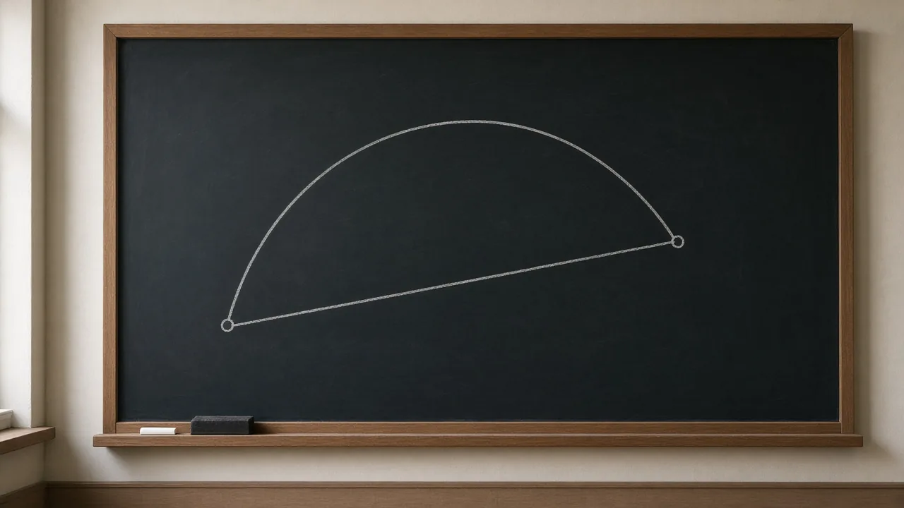

The orthogonal projection of a vector onto a line or a subspace is the closest point in that line or subspace to the vector, and the leftover piece, the error, always points at a right angle to the whole subspace. Least squares is that same idea turned into a tool: when a matrix equation $A\mathbf{x}=\mathbf{b}$ has no exact solution, the least squares solution is the $\mathbf{x}$ that makes $A\mathbf{x}$ the orthogonal projection of $\mathbf{b}$ onto the column space of $A$, the closest point the equation can actually reach.
Without the fog
Picture a straight line through the origin and a point hanging off to one side. The closest point on the line to that point is found by dropping a perpendicular from the point to the line. The segment you dropped, from the point to its shadow on the line, meets the line at a right angle. Margalit and Rabinoff's Interactive Linear Algebra calls the shadow the orthogonal projection and the dropped segment the orthogonal decomposition: every vector $\mathbf{x}$ splits uniquely as $\mathbf{x} = \hat{\mathbf{x}} + \mathbf{z}$, where $\hat{\mathbf{x}}$ is the closest point of the subspace to $\mathbf{x}$ and $\mathbf{z}$ is orthogonal to every vector in the subspace.
Projection onto a line
Interactive Linear Algebra's recipe for a line through the origin spanned by a vector $\mathbf{a}$ is
$$\hat{\mathbf{b}} = \frac{\mathbf{b}\cdot\mathbf{a}}{\mathbf{a}\cdot\mathbf{a}}\,\mathbf{a}.$$
The book's remark on the formula gives the one line reason it works: $\hat{\mathbf{b}}$ is some multiple $x\mathbf{a}$ of $\mathbf{a}$, chosen so that $\mathbf{b}-x\mathbf{a}$ is perpendicular to $\mathbf{a}$, so $(\mathbf{b}-x\mathbf{a})\cdot\mathbf{a}=0$, and solving that single equation for $x$ gives the formula above.
Projection onto a subspace with an orthogonal basis
When a subspace has an orthogonal basis, the projection onto the whole subspace is just the sum of the line projections onto each basis vector. Interactive Linear Algebra's Projection Formula in Section 6.4 states this for an orthogonal basis $\mathbf{u}_1,\dots,\mathbf{u}_m$ of a subspace $W$: for any $\mathbf{x}$,
$$\hat{\mathbf{x}} = \frac{\mathbf{x}\cdot\mathbf{u}_1}{\mathbf{u}_1\cdot\mathbf{u}_1}\,\mathbf{u}_1 + \cdots + \frac{\mathbf{x}\cdot\mathbf{u}_m}{\mathbf{u}_m\cdot\mathbf{u}_m}\,\mathbf{u}_m.$$
The Gram Schmidt explainer's third worked example produced the orthogonal set $\mathbf{u}_1=(1,1,0)$ and $\mathbf{u}_2=(1,-1,2)$, two of the three vectors it built from $\mathbf{v}_1=(1,1,0)$, $\mathbf{v}_2=(1,0,1)$ and $\mathbf{v}_3=(0,1,1)$. Take $W=\operatorname{span}\{\mathbf{u}_1,\mathbf{u}_2\}$, the plane those two vectors sweep out.
$$\hat{\mathbf{x}} = 1(1,1,0) + \frac{5}{3}(1,-1,2) = \left(\frac{8}{3},-\frac{2}{3},\frac{10}{3}\right).$$
The error is $\mathbf{x}-\hat{\mathbf{x}}=\left(-\frac{2}{3},\frac{2}{3},\frac{2}{3}\right)$. Check against both basis vectors: $\mathbf{u}_1\cdot\left(-\frac{2}{3},\frac{2}{3},\frac{2}{3}\right)=-\frac{2}{3}+\frac{2}{3}+0=0$, and $\mathbf{u}_2\cdot\left(-\frac{2}{3},\frac{2}{3},\frac{2}{3}\right)=-\frac{2}{3}-\frac{2}{3}+\frac{4}{3}=0$. Both zero, so the error is orthogonal to the whole plane, not just to one of the two vectors.
Projection onto a subspace with any basis: the normal equations
Most bases are not orthogonal, so the shortcut above does not apply directly. Interactive Linear Algebra's Section 6.3 theorem handles the general case: if $A$ is a matrix whose columns span a subspace $W$, the equation $A^{T}A\mathbf{x}=A^{T}\mathbf{b}$ is always consistent, and $\hat{\mathbf{b}}=A\mathbf{x}$ for any solution $\mathbf{x}$. The same equation reappears as the least squares theorem in Section 6.5, and Gilbert Strang's MIT 18.06 Lecture 16 transcript calls it, in his own words, the most important equation in statistics
.
When the columns of $A$ are linearly independent, Interactive Linear Algebra's Corollary in Section 6.3 adds that $A^{T}A$ is invertible and the projection has a matrix formula,
$$P = A(A^{T}A)^{-1}A^{T}, \qquad \hat{\mathbf{b}} = P\mathbf{b}.$$
$P$ projects any vector it is given, so projecting twice does nothing new: Strang's lecture states the matrix fact that matches the geometric one directly, if P squared equals P, then I minus P squared equals I minus P
, and Interactive Linear Algebra's list of projection matrix properties gives the same idempotence from the eigenvalue picture: $P$ has eigenvalue $1$ on $W$ and eigenvalue $0$ on the vectors orthogonal to $W$, so applying $P$ again changes nothing.
$$\hat{\mathbf{x}} = -\frac{2}{3}(1,1,0) + \frac{5}{3}(2,0,2) = \left(\frac{8}{3},-\frac{2}{3},\frac{10}{3}\right),$$
the identical point found with the orthogonal basis above. The projection depends only on the subspace $W$, never on which basis you used to describe it.
Why Ax=b often has no solution, and least squares picks the closest point
The equation $A\mathbf{x}=\mathbf{b}$ is consistent exactly when $\mathbf{b}$ is in the column space of $A$. With more equations than unknowns, that column space is usually a proper subspace of the space $\mathbf{b}$ lives in, so most $\mathbf{b}$ are not reachable and the equation has no exact solution. Interactive Linear Algebra defines a least squares solution $\hat{\mathbf{x}}$ of $A\mathbf{x}=\mathbf{b}$ as a vector that makes $\operatorname{dist}(\mathbf{b},A\hat{\mathbf{x}})$ as small as possible over every choice of $\mathbf{x}$, and its least squares theorem identifies that closest reachable point: since the column space is exactly the set of vectors $A\mathbf{x}$, the closest one to $\mathbf{b}$ is the orthogonal projection $\hat{\mathbf{b}}$, and a least squares solution is precisely a solution of $A\hat{\mathbf{x}}=\hat{\mathbf{b}}$, which is the same consistent equation $A^{T}A\mathbf{x}=A^{T}\mathbf{b}$ from the projection theorem above.
Worked example: fitting the best line
Gilbert Strang's MIT 18.06 Lecture 16 transcript works through fitting a line $y=C+Dt$ to three points, heights $1$, $2$ and $2$ measured at $t=1$, $2$ and $3$. No line hits all three, so the three equations
$$C+D=1,\qquad C+2D=2,\qquad C+3D=2$$
have no exact solution. In matrix form $A\mathbf{x}=\mathbf{b}$ with $A=\begin{pmatrix}1&1\\1&2\\1&3\end{pmatrix}$, $\mathbf{x}=(C,D)$ and $\mathbf{b}=(1,2,2)$. The transcript computes $A^{T}A=\begin{pmatrix}3&6\\6&14\end{pmatrix}$ and $A^{T}\mathbf{b}=(5,11)$, the normal equations $3C+6D=5$ and $6C+14D=11$. Subtracting twice the first equation from the second leaves $2D=1$, so $D=\frac12$, and back substitution gives $3C+3=5$, so $C=\frac23$. The best fit line is
$$y = \frac{2}{3} + \frac{1}{2}t.$$
The three points on that line at $t=1,2,3$ are $\hat{\mathbf{b}}=\left(\frac{7}{6},\frac{5}{3},\frac{13}{6}\right)$, and the error is $\mathbf{e}=\mathbf{b}-\hat{\mathbf{b}}=\left(-\frac16,\frac13,-\frac16\right)$. As the theorem demands, $\mathbf{e}$ is orthogonal to both columns of $A$: $\mathbf{e}\cdot(1,1,1)=-\frac16+\frac13-\frac16=0$ and $\mathbf{e}\cdot(1,2,3)=-\frac16+\frac23-\frac12=0$. The least squares line minimizes the sum of the squared vertical gaps $e_1^2+e_2^2+e_3^2=\frac{1}{36}+\frac{4}{36}+\frac{1}{36}=\frac16$ between the line and the three data points, exactly the quantity the transcript names as the thing being minimized.
When is A^T A invertible?
Strang's MIT 18.06 Lecture 16 transcript gives the short proof that makes everything above work: if $A^{T}A\mathbf{x}=\mathbf{0}$, multiply both sides on the left by $\mathbf{x}^{T}$ to get $\mathbf{x}^{T}A^{T}A\mathbf{x}=(A\mathbf{x})\cdot(A\mathbf{x})=0$. A dot product of a vector with itself is zero only for the zero vector, so $A\mathbf{x}=\mathbf{0}$. If the columns of $A$ are linearly independent, the only vector in the null space of $A$ is $\mathbf{0}$, which forces $\mathbf{x}=\mathbf{0}$ too, and a matrix whose null space is only the zero vector is invertible by the rank nullity theorem's count of pivots. So $A^{T}A$ is invertible exactly when the columns of $A$ are linearly independent, which is also when the least squares solution $\mathbf{x}$ is unique, even though the projection $\hat{\mathbf{b}}$ onto the column space is always unique regardless.
The dot product in that proof is the standard inner product. A symmetric matrix with positive eigenvalues defines a different product, and the normal equations change with it. See inner product spaces.

Inner product spaces
The dot product in the normal equations is one choice. A weighted product moves the right angle.

The Gram Schmidt process
Build the orthogonal basis this page reuses before it writes a projection as a sum.
Change of basis explained
The same orthonormal shortcut, written as a change of coordinates.

Linear independence explained
Why independent columns are exactly the case when the least squares solution is unique.
Common mistakes
- Checking the error against only one basis vector. The error vector must be orthogonal to every vector in the subspace, which for a basis means checking it against each basis vector in turn, not just the first one.
- Using the orthogonal shortcut on a basis that is not orthogonal. The sum of line projections formula only works when the basis vectors are pairwise orthogonal. On any other basis, solve the normal equations $A^{T}A\mathbf{x}=A^{T}\mathbf{b}$ instead.
- Confusing the least squares solution with the projection. Solving the normal equations gives the coordinate vector $\mathbf{x}$, not the closest point itself. The closest point, the actual projection, is $A\mathbf{x}$.
- Assuming Ax=b is solvable. With more rows than columns, an exact solution is the exception. Least squares does not solve the original equation; it solves the closest consistent equation.
- Forgetting that dependent columns break uniqueness. If the columns of $A$ are dependent, $A^{T}A$ is not invertible and the normal equations have infinitely many solutions, even though the projected point $\hat{\mathbf{b}}$ is still one specific vector.
Related reading
- The Gram Schmidt process explained and basis and dimension explained
- Linear independence explained and what is a vector space?
- The rank nullity theorem explained and row reduction (RREF) intuition
- What a determinant means geometrically and eigenvalues in plain language
- Change of basis explained, where the orthonormal shortcut used here for projection also simplifies the change of basis matrix
- Linear algebra topic map and the linear algebra first course pathway
- Glossary: basis, span, vector, inner product, all explainers and the sources page
Inner product spaces
Four properties, then Cauchy Schwarz for a product that is not the dot product.

Diagonalization explained
Symmetric matrices, eigenbases, and the dot product those bases are orthonormal for.
Basis and dimension explained
What it means for the columns of A to be a basis of the column space.

Eigenvalues in plain language
The stretch picture behind a positive definite matrix, which can define another inner product.
Related tools
The Gram Schmidt calculator builds the orthogonal basis used in the worked examples above, with steps. The vector operations calculator checks any single dot product in this page, including the orthogonality checks on the error vectors.
Sources
- Dan Margalit and Joseph Rabinoff, Interactive Linear Algebra, Section 6.3 Orthogonal Projection (orthogonal decomposition theorem, the consistency theorem for A^T A x = A^T b, the recipe for projection onto a line, the corollary on A^T A invertibility and the projection matrix, and the properties of projection matrices) (retrieved 16 Nov 2026)
- Dan Margalit and Joseph Rabinoff, Interactive Linear Algebra, Section 6.5 The Method of Least Squares (the least squares solution definition, the least squares theorem, the uniqueness theorem, and the best fit line example) (retrieved 16 Nov 2026)
- MIT OpenCourseWare, 18.06 Linear Algebra (Spring 2010), Gilbert Strang, Lecture 15: Projections onto subspaces (retrieved 16 Nov 2026)
- MIT OpenCourseWare, 18.06 Linear Algebra (Spring 2010), Gilbert Strang, Lecture 16: Projection matrices and least squares, including the lecture transcript (the fitting a line worked example with exact numbers, the P squared equals P remark, and the A^T A invertibility proof) (retrieved 16 Nov 2026)
Last reviewed: 20 November 2026.
Common questions
What is the difference between orthogonal projection and least squares?
Orthogonal projection finds the closest point to a vector inside a subspace. Least squares applies that idea to a matrix equation $A\mathbf{x}=\mathbf{b}$ that has no exact solution: the least squares solution is the $\mathbf{x}$ that makes $A\mathbf{x}$ equal to the orthogonal projection of $\mathbf{b}$ onto the column space of $A$, the closest point in that column space to $\mathbf{b}$.
Why is the error vector always orthogonal to the subspace?
If the error vector had any component still inside the subspace, you could subtract that component and land on a point of the subspace strictly closer to the original vector, so the projection would not have been the closest point after all. The only way no closer point exists is for every leftover component to point outside the subspace entirely, which is exactly what orthogonal to the subspace means.
What does it mean for a projection matrix to satisfy P squared equals P?
Applying the projection a second time changes nothing, because the first application already landed inside the subspace, and projecting a point that is already in the subspace returns that same point. Algebraically $P^2=P$, and $P$ is also symmetric, $P^{T}=P$.
When does the normal equations method fail to give a unique least squares solution?
When the columns of $A$ are linearly dependent. Then $A^{T}A$ is not invertible, the normal equations have infinitely many solutions, and the least squares solution $\mathbf{x}$ is not unique, even though the projection of $\mathbf{b}$, which is $A\mathbf{x}$, is still unique.